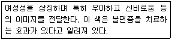
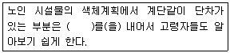
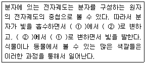
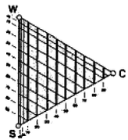

컬러리스트산업기사 (2011-06-12 기출문제)
1과목: 색채심리
1. 미국의 색채학자 저드(Judd)의 색채 조화론 가운데 먼셀의 색체계와 같은 시각적인 등보성의 색공간에서 규칙적으로 뽑은 색은 조화한다. 라는 원리는?
- 친숙성
- 유사성
- 명료성
- 질서성
(정답률: 알수없음)

2. 사용하고자 하는 두 가지 색상의 대비가 지나치게 강하여 색과 색 사이에 다른 색을 삽입하여 조화를 도모하고자 한다. 이러한 효과를 무엇이라 하는가?
- 연속
- 분리
- 반복
- 강조
(정답률: 알수없음)
3. 다음 중 어른의 색채 선호 경향이 옳게 나열된 것은?
- 파랑 → 빨강 → 녹색 → 흰색 → 주황
- 빨강 → 파랑 → 주황 → 녹색 → 흰색
- 주황 → 파랑 → 녹색 → 흰색 → 빨강
- 파랑 → 녹색 → 빨강 → 주황 → 흰색
(정답률: 알수없음)
4. 색채기호 지역설에 관한 설명 중 틀린 것은?
- 태양광선이 풍부한 곳에서는 강렬하고 채도가 높은 색채를 선호한다.
- 백야지역에서는 인간의 황색 시각을 높인다.
- 태양광선이 부족한 곳에서는 연하고 채도가 낮은 색채를 선호한다.
- 태양광선의 강도가 인간의 적색시각을 높인다.
(정답률: 알수없음)
5. 색채의 상징적 의미가 가장 낮게 적용된 것은?
- 국기색
- 기업의 CIP색
- 픽토그램
- 오방색
(정답률: 알수없음)
6. 다음 어떤 색에 대한 설명인가?

- 파랑
- 보라
- 흰색
- 분홍
(정답률: 알수없음)
7. 다음 중 토널(tonal)배색의 예로 적합한 것은?
- 2.5R 5/6, 2.5R 9/1
- 5YR 8/1, 5PB 8/1
- 2.5B 5/6, 5RP 5/6
- 5B 5/10, 5R 5/10
(정답률: 알수없음)
8. 예술, 디자인계 사조별 색채특성에 관한 설명 중 틀린 것은?
- 야수파는 색채의 특성을 이용하여 강렬한 색채를 주제로 사용하였다.
- 바우하우스는 공간적 질서 속에서 색 면의 위치, 배분을 중시하였다.
- 인상파는 병치혼합 기법을 이용하여 색채를 도구화 하였다.
- 미니멀리즘은 비개성적, 극단적 간결성의 색채를 사용하였다.
(정답률: 알수없음)
9. 다음 중 장시간 머물면서 사무적인 일을 하는 공간에 적합한 색은?
- 5G 5/2
- 5G 2/5
- 2.5PB 8/2
- 2.5PB 2/8
(정답률: 알수없음)
10. 색채의 계절연상과 배색에 대한 이론 중 틀린 것은?
- 봄 - 짙은 톤으로 구성한다.
- 여름 - 원색과 선명한 톤으로 구성한다.
- 가을 - 봄의 색조와 강한 대비를 이룬다.
- 겨울 - 차갑고, 후퇴, 희박성을 나타내는 회색 톤으로 구성한다.
(정답률: 알수없음)
11. 분리색에 의한 배색 효과에 대한 설명으로 틀린것은?
- 배색이 너무 평범하고 단조로울 경우에 사용한다.
- 두 색 간의 대비가 지나칠 때 사용한다.
- 분리색으로 자주 사용되는 색은 무채색이다.
- 건축, 회화, 텍스타일 디자인 등에 많이 사용된다.
(정답률: 알수없음)
12. 빈칸에 들어갈 가장 적합한 말은 무엇인가?

- 명도 차이
- 광택 차이
- 채도 차이
- 소재 차이
(정답률: 알수없음)
13. 맛을 대표하는 색채끼리 짝지은 것이다. 틀린 것은?
- 달콤한 맛 - 고동색과 청색의 배색
- 신맛 - 노랑과 연두색의 배색
- 짠맛 - 청록색과 회색의 배색
- 쓴맛 - 밤색과 올리브 그린의 배색
(정답률: 알수없음)
14. 올림픽 오륜기에서 지역을 나타내는 색의 상징으로 옳은 것은?
- 아프리카 - 파랑
- 아시아 - 초록
- 오세아니아 - 노랑
- 아메리카 - 빨강
(정답률: 알수없음)
15. 군인들이 착용하는 군복색에서 가장 중요하게 고려되어야 할 사항은?
- 연상색
- 기억색
- 은폐색
- 상징색
(정답률: 알수없음)
16. 하나의 색상은 긍정적 연상과 부정적 연상을 모두 가지고 있으므로 마케팅 전략을 위해서는 부정적인 연상도 잘 알고 있어야 한다. 부정적 연상으로 유령의, 영적인, 추운, 텅빈 등의 연상이미지를 갖는 것은?
- 검정
- 흰색
- 보라
- 회색
(정답률: 알수없음)
17. 색채를 국제언어적 측면에서 사용한 것이 아닌 것은?
- 공원표지판의 녹색
- 교통표지판에서 장애물을 나타내는 노랑
- 국기에 사용하는 색채
- 소화기의 빨강
(정답률: 알수없음)
18. 다음 색의 정서적 반을 중 틀린 설명은?
- 녹색은 희망, 안정, 휴양을 느끼게 한다.
- 자주색은 황색보다 모든 방향으로 빛을 방사하는 성격을 가지고 있다.
- 오렌지색은 수용적이며 따뜻하고 친밀한 성격을 담고 있다.
- 황색은 활동적이면 화려함과 만족감을 준다.
(정답률: 알수없음)
19. 능률향상을 위한 색채계획으로 틀린 것은?
- 난색계로 구성된 작업 공간이 한색계보다 실제로 머문 시간이 더 짧게 느껴진다.
- 벽면의 색을 중간 명도의 색으로 사용하면 심리적인 즐거움과 휴식을 줄 수 있다.
- 강한 빛에서는 검정 바탕의 흰 물체가 가장 잘 드러나 보이지만, 약한 빛에서는 흰색 바탕의 검은 물체가 가장 잘 보인다.
- 조명과의 관계를 고려하여 책의 바탕색은 흰색인 것이 가장 이상적이다.
(정답률: 알수없음)
20. 부드러운 감촉의 유아용 제품에 적절하게 어울리는 색채는?
- 채도가 낮은 보라색
- 밝은 하늘색
- 어두운 회색
- 명도가 낮은 녹색
(정답률: 알수없음)
2과목: 색채디자인
21. 그린디자인의 개념, 원칙과 가장 거리가 먼 것은?
- 재사용
- 재생
- 절약
- 문화
(정답률: 알수없음)
22. 시각디자인에 관한 설명으로 틀린 것은?
- 시각디자인은 포스터, 광고 등 시각매체를 통하여 메시지를 전달하는 것이다.
- 시각디자인의 가장 큰 역할은 커뮤니케이션이다.
- 시각디자인에 있어서는 색채는 색의 재료와 물리적인 성질을 이해하는 것이다.
- 포장디자인 색채는 상품의 특성을 분명하게 해주고 소비자로 하여금 구매충동을 유발시킬 수 있어야 한다.
(정답률: 알수없음)
23. 18세기에서 19세기에 걸쳐 일어난 산업혁명이 산업디자인에 끼친 가장 커다란 영향은?
- 제품이 대량 생산되어 가격이 저렴해짐
- 다양한 제품이 생산되어 소비자층이 확산됨
- 제품의 장식이 보다 더 정교해짐
- 튼튼한 제품 생산으로 제품의 수명주기가 연장됨
(정답률: 알수없음)
24. 디자인 사조와 색채의 관계가 잘못 설명된 것은?
- 큐비즘의 대표적인 작가인 파블로 피카소는 색상의 대비를 적극적으로 사용하였다.
- 플럭서스에서는 회색조가 전반을 이루고 색이 있는 경우에는 어두운 색조가 주가 되었다.
- 아르데코에서는 보라색, 핑크색의 연한 파스텔 색조가 사용되었다.
- 다다이즘에서는 일반적으로 어둡고 칙칙한 색조가 사용되었다.
(정답률: 알수없음)
25. 홈페이지를 기획하고 종합적으로 디자인하는 디자인 직종은?
- 전산회계사
- 웹디자이너
- 몰 마스터
- 정보처리전문가
(정답률: 알수없음)
26. 다음 중 환경디자인에서 사용되는 용어가 아닌 것은?
- 스트리트 퍼니쳐
- 기업의 CIP
- 랜드마크
- 슈퍼그래픽
(정답률: 알수없음)
27. 색채마케팅의 직접적인 기능 및 효과가 아닌 것은?
- 특별한 이미지 부여
- 차별적 경쟁력 확보
- 유통망 개선과 확대
- 판매촉진과 수익증대
(정답률: 알수없음)
28. 좋은 디자인을 만들기 위하여 디자이너가 고려해야 할 사항으로 부적절한 것은?
- 최소의 경비로 최대의 효과를 얻을 수 있는 자재, 노력, 경비 등을 고려한 디자인
- 디자인 제품의 생산과정에 대한 전문적인 지식
- 창의적이고 독창적인 디자인
- 과거의 유행 디자인에 대한 단순 모방
(정답률: 알수없음)
29. 공간을 구성하는 단위이며, 공간효과를 나타내는 중요한 요소는?
- 점
- 선
- 면
- 색채
(정답률: 알수없음)
30. 오스트리아 출신이며 유겐트스틸의 대표적 작가로 윤곽선이 강조된 얼굴이나 모자이크풍으로 평면성과 장식성이 결부된 의복 등 독자적이고 고혹적인 양식을 창조한 사람은?
- 윌리엄 모리스
- 요하네스 잇텐
- 피엣 몬드리안
- 구스타프 클림트
(정답률: 알수없음)
31. 색채 계획시 주조색에 대한 설명 중 틀린 것은?
- 전체의 70%이상을 차지하는 색이다.
- 전체 색채 효과를 좌우하는 색이다.
- 디자인 분야별로 주조색의 경향을 동일하다.
- 주조색 선정 시 재료, 대상, 목적 등을 고려하여야 한다.
(정답률: 알수없음)
32. 르네상스 이후 기독교 고정예술의 반작용으로 프랑스에서 유행한 화려하고 사치스러운 장식과 색채의 귀족예술이 특징인 사조는?
- 바로크
- 로코코
- 사실주의
- 아를데코
(정답률: 알수없음)
33. 최근 환경에 대한 관심과 자연보호에 대한 인식이 높아지면서 자연을 대표하는 색으로 많이 활용되는 색은?
- 빨강
- 녹색
- 노랑
- 보라
(정답률: 알수없음)
34. 빅터 파파텍이 규정한 복합 기능 중 특수한 목적을 달성하기 위한 자연과 사회의 변천작용에 대한 계획적이고 의도적인 실용화를 의미하는 것은?
- 방법
- 용도
- 필요성
- 텔레시스
(정답률: 알수없음)
35. 도시환경의 색체적용 시 고려할 조건으로 거리가 먼 것은?
- 면적효과
- 거리감
- 조명조건
- 사용자의 개인적 취향
(정답률: 알수없음)
36. 디자인의 합목적성에 관한 내용으로 관계가 가장 적은 것은?
- 실용상의 목적을 가리키는 것이다.
- 객관적, 합리적인 접근이 요구된다.
- 과학적, 공학적 기초가 필요하다.
- 토속적, 관습적 접근이 필요하다.
(정답률: 알수없음)
37. 색의 마케팅 전략의 발전과정을 옳게 나열한 것은?
- 틈새마케팅 - 표적마케팅 - 맞춤마케팅 - 매스마케팅
- 표적마케팅 - 매스마케팅 - 맞춤마케팅 - 틈새마케팅
- 매스마케팅 - 표적마케팅 - 틈새마케팅 - 맞춤마케팅
- 맞춤마케팅 - 매스마케팅 - 표적마케팅 - 틈새마케팅
(정답률: 알수없음)
38. 매슬로우(A.Maslow)의 기본욕구에 해당하지 않는 것은?
- 안전욕구
- 생리적욕구
- 자아실현욕구
- 소비욕구
(정답률: 알수없음)
39. 패션디자인에 관한 설명으로 틀린 것은?
- 패션디자인의 주요소는 색채, 선, 유생성이라 할수 있다.
- 패션디자인에서 색채는 사람들이 가장 먼저 반응하는 요소이다.
- 현대 사회는 감성적인 측면을 강조하므로 색채는 중요한 디자인 요소이다.
- 재질이 다른 소재에 같은 색상을 적용하면 변화와 통일감을 줄 수 있다.
(정답률: 70%)
40. 색채계획의 효과와 관계가 적은 것은?
- 근로자의 피로를 경감시킨다.
- 쾌적한 작업 환경을 만든다.
- 유지관리 비용이 높아진다.
- 작업 능률을 높인다.
(정답률: 알수없음)
3과목: 섹채관리
41. 특수 잉크 중 잉크의 건조속도가 짧고 다량의 인쇄물을 빠른 속도로 인쇄할 수 있는 것은?
- 금은 잉크
- 히트세트 잉크
- 수성 그라비어 잉크
- 형광 잉크
(정답률: 알수없음)
42. 빛을 전하로 변환하는 스캐너 부속 광합 칩 장비 장치는?
- CCD(Charge Coupled Device)
- PPI(Pixel Per lnch)
- CEPS(Color Electronic Prepress System)
- OCR(Optical Character Recognition)
(정답률: 알수없음)
43. 다음 중 진주광택 안료의 색채 특성을 측정하기 위하여 필요한 방법은?
- 다중각(multiangle)측정법
- 필터감소(filter reduction)법
- 이중 모노크로메터법 (two-monochromator method)
- 이중 모드법(two-mode method)
(정답률: 알수없음)
44. 분광반사율의 분포가 서로 다른 두 개의 색자극이 광원의 종류와 관찰자 등의 관찰조건을 일정하게 할 때에만 같은 색으로 보이는 경우는?
- 메타메리즘
- 무조건 등색
- 색채적응
- 컬러인덱스
(정답률: 75%)
45. 다음 중 안료를 사용하여 발색하는 것이 아닌 것은?
- 플라스틱
- 유성페인트
- 직물
- 고움
(정답률: 알수없음)
46. 산업표준의 일치를 통하여 국제적인 표준을 유지하며 각 국가별 공겁규격이 따르도록 국제적인 표준규격을 정하는 단체는?
- ISCC (Inter-Society Color Council)
- ASTM (American Society for Testing and Masterials)
- ISO (International Standard Organization)
- CIE (Commission Internationale de I'Eclairage)
(정답률: 알수없음)
47. 다음 중 분포온도가 약 2856K로 상대 분광분포를 가진광이며, 백열전구로 조명되는 물체색을 표시할 경우에 사용하는 광원은?
- 표준광 A
- 표준광 B
- 표준광 C
- 표준광 D
(정답률: 알수없음)
48. 무기안료에 대한 설명으로 틀린 것은?
- 물, 기름, 알코올 등 대개의 유기용제에 녹는다.
- 대광성, 내열성이 크다.
- 유기 안료에 비해 착색력은 약하다.
- 특수한 안료로는 야광도료 등에 쓰이는 형광안료가 있다.
(정답률: 알수없음)
49. ( )안에 들어갈 내용은 무엇인가?

- ( ① )바닥상태, ( ② )기저상태
- ( ① )기저상태, ( ② )바닥상태
- ( ① )여기상태, ( ② )기저상태
- ( ① )기저상태, ( ② )여기상태
(정답률: 알수없음)
50. CCM의 활용 효과가 아닌 것은?
- 색채의 균일성
- 비용절감
- 작업속도 향상
- 주변색의 색채변화 예측
(정답률: 알수없음)
51. 연색성을 이용하여 정육점의 조명을 설치하려고 할 때 적합한 것은?
- 백열등
- 적색 광원
- 텅스텐 램프
- 온백색 형광등
(정답률: 알수없음)
52. 다음 중 상대적으로 선명한 색채를 제공하나 해독하기 어려울 정도로 그림이나 글씨가 작게 나타나는 해상도는?
- 640x480
- 800x600
- 1024x768
- 1280x1024
(정답률: 알수없음)
53. 광원을 측정하는 광측정 단위와 거리가 먼 것은?
- 광도
- 휘도
- 조도
- 감도
(정답률: 알수없음)
54. 색역영 맵핑(color gamut mapping)에 대한 설명으로 틀린 것은?
- 색채를 다루는 기기의 다양화와 함께 재현되는 색채의 품질을 좌우한다.
- 색영역이란 색을 생성하는 기기가 주어진 관찰조건 하에서 생성할 수 있는 색의 전 범위를 말한다.
- 색영역 맵핑 방법은 색영역 클립핑 방법과 색영역 압축방법의 두 가지로 구분할 수 있다.
- 색영역 맵핑은 멀티폼 색공간에서 이루어져야 한다.
(정답률: 알수없음)
55. 순수하게 색만이 있는 느낌으로서 실체감, 구조, 음영이 아니라 깊이가 애매모호하여 끝없이 들어갈 수 있게 보이는 색은?
- 면색
- 표면색
- 공간색
- 경영색
(정답률: 알수없음)
56. 다음 중 조명용으로 사용되는 고압방전등이 아닌것은?
- 고압수은등
- 메탈할라이드등
- 할로겐등
- 고압나트륨등
(정답률: 알수없음)
57. 구름이 얇고 고르게 낀 상태에서의 태양광 색온도는?
- 2000K
- 12000K
- 9000K
- 6500K
(정답률: 알수없음)
58. 다음 중 프린터용 기본 디지털 색채에 해당하는 것은?
- red
- blue
- green
- yellow
(정답률: 알수없음)
59. 색채측정시, 일반측정 관측조건에 대한 약어인 d/8:1의 의미로 옳은 것은?
- 확산조명과 정반사 요소가 포함된 8° 관측
- 확산조명과 정반사 요소가 배제된 8° 관측
- 8° 원주의 조명과 수직 관측
- 수직조명과 8° 원주의 관측
(정답률: 알수없음)
60. 분광식 측색기의 특징을 가장 바르게 설명한 것은?
- 백색 기준물의 관리가 필요 없다.
- 삼자극치 값을 직접 측정하게 된다.
- 측정이 간편하고 구조가 간단하여 정밀한 측색은 어렵다.
- 다양한 광원과 표준관측자에 대한 색채값을 얻을 수 있다.
(정답률: 알수없음)
4과목: 색채지각의이해
61. 보색잔상현상을 색채시스템으로 설명한 사람은?
- 뉴턴(Newton)
- 영(young)
- 호이겐스(Huygens)
- 헤링(Hering)
(정답률: 알수없음)
62. 주목성에 대한 일반적인 설명 중 틀린 것은?
- 색이 사람의 주의를 끄는 성질을 의미한다.
- 주목성은 난색계가 높다.
- 주목성은 색의 배경과 관계가 있다.
- 주목성이 높은 색은 파란색 계통이다.
(정답률: 알수없음)
63. 잔상에 대한 다음의 설명 중 틀린 것은?
- 원래의 감각과 같은 질의 밝기나 색상은 가질 때를 양성잔상이라 한다.
- 원래의 감각과 반대의 밝기 또는 색상을 가질 때를 음성잔상이라 한다.
- 양성 잔상은 원래의 자극과 같아서, 다음에 오는 자극을 더 강하게 할 수 있다.
- 음성 잔상은 동화 현상과 관련이 있다.
(정답률: 알수없음)
64. 가법 및 감법혼색에 대한 설명으로 틀린 것은?
- Magenta와 Cyan을 감법혼색하면 Blue가 된다.
- 감법혼색은 색료의 혼합으로 점점 탁하고 어두워지는 특색이 있다.
- Red와 Green을 감법혼색하면 Yellow가 된다.
- 컬러 슬라이드, 영화 필름 등은 모두 가법혼색을 이용하여 색을 재현한다.
(정답률: 알수없음)
65. 물체색을 빨간색, 파란색으로 인식하는 것은 빛의 어떤 성질 때문인가?
- 흡수
- 반사
- 투과
- 굴절
(정답률: 알수없음)
66. 색체의 온도감에 대한 설명으로 틀린 것은?
- 파장이 짧은 쪽이 따뜻하게 느껴진다.
- 가장 따뜻하게 느껴지는 색은 빨강이다.
- 연두, 초록, 보라, 자주 등의 색은 차갑게도 따뜻하게도 느껴질 수 있다.
- 저명도의 색이 고명도의 색보다 따뜻하게 느껴진다.
(정답률: 알수없음)
67. 색에 대한 시간의 느낌을 설명한 것으로 옳은 것은?
- 장파장 계열의 색은 시간이 짧게 느껴진다.
- 단파장 계열의 색 공간에서는 장파장 공간보다 같은 시간이라도 지루하게 느껴진다.
- 패스트푸드점에서 손님들이 짧게 머물기를 원한다면 장파장 계열의 색을 사용한다.
- 단파장 계열의 운동복을 입으면 빠르게 움직이는 것처럼 보인다.
(정답률: 알수없음)
68. 색들끼리 서로 영향을 주어서 인접색에 가까운 것으로 느껴지는 현상은?
- 계시효과
- 동시효과
- 면적효과
- 동화효과
(정답률: 알수없음)
69. 터널의 양쪽 끝은 밝게 하고 중간 쪽으로 점점 어둡게 만들어져 있는 것과 관계되는 색 지각 현상은?
- 잔상현상
- 푸르킨예현상
- 명암순응현상
- 계시대비현상
(정답률: 알수없음)
70. 다음 중 색의 밝기와 관련된 것으로 묶인 것은?
- Value, Coroma, Y
- Value, L*, Y
- L*, Chroma, N
- L*, N, hue
(정답률: 알수없음)
71. 빨간색 사과를 계속 보고 있다가 흰색 벽을 보았을 때 청록색 사과의 잔상이 떠오르는 것을 설명할 수 있는 원리는?
- 색의 감속현상
- 망막의 흥분현상
- 푸르킨예 현상
- 반사광선의 자극현상
(정답률: 알수없음)
72. 다음 배색 중에서 명도대비가 가장 크게 일어나는 것은?
- 빨가색 - 검정색
- 노란색 - 흰색
- 빨간색 - 노란색
- 검정색 - 흰색
(정답률: 알수없음)
73. 색지각이 백색보다 더 밝게 느껴지는 현상은?
- 투과
- 편광
- 광택
- 광휘
(정답률: 알수없음)
74. 녹색의 빛과 빨간색의 빛을 혼합할 때 빨강색광이 더 강하면 어떤 색이 되는가?
- 흰색
- 노란색
- 주황색
- 연두색
(정답률: 알수없음)
75. 명도대비에 대한 설명 중 틀린 것은?
- 흰색 배경 위의 회색이 검은색 배경 위의 회색보다 밝아 보인다.
- 배경색의 명도가 낮으면 본래의 명도보다 높아 보인다.
- 배경색의 명도가 높으면 본래의 명도보다 낮아 보인다.
- 명도차가 다른 두 색이 서로 대조가 되어 두 색간의 명도차가 크게 보이는 현상을 말한다.
(정답률: 알수없음)
76. 색지각설 중 삼원색설을 주장한 사람은?
- 뉴튼
- 헤링
- 리프만
- 영·헬름홀쯔
(정답률: 알수없음)
77. 감법혼색에서 원색으로 C, M, Y(cyan, magenta, yellow)를 사용하는 근본적인 원인은?
- 최소의 색체로 색역(gamut)을 최대화하기 위하여
- 물리적이고 화학적인 특성 때문에
- 기본적인 색으로 알려진 색채이므로
- 색료의 특성이 좋고 아름다운 색체이므로
(정답률: 알수없음)
78. 색의 물체와 배경(figure-ground)관계에서 저명도의 배경일 때 밝은 물체는 어떻게 보이는가?
- 후퇴
- 진출
- 수축
- 동화
(정답률: 알수없음)
79. 다음 중 어떤 색을 보고 난 후에 다른색을 보는 경우 먼저 본 색의 영향으로 다음에 보이는 색이 다르게 보이는 대비 효과는?
- 보색대비
- 한난대비
- 계시대비
- 연변대비
(정답률: 알수없음)
80. 다음 중 빛의 3원색을 동일한 양으로 혼합한 결과는?
- N0
- N5
- N10
- N15
(정답률: 알수없음)
5과목: 색채체계의이해
81. CIELAB색채계는 CIE표준 색채계가 가지는 일부 단점을 개선한 것이다. 어떠한 측면을 개설한 것인가?
- 측색의 난이성
- 지각적 거리와 색공간 거리의 불일치
- 색 재현 범위의 한계성
- 색표 제작의 문제
(정답률: 알수없음)
82. 배색의 기초로 대립의 원리를 꼽을 수 있다. 이런 맥락에서 가장 거리가 먼 것은?
- 색상대비
- 명도대비
- 채도대비
- 계시대비
(정답률: 알수없음)
83. 상용색표(DIC, PANTONEO 등)에 대한 설명으로 틀린 것은?
- 기업에서 자사제품의 활용을 위해 고객서비스 차원에서 출발하였다.
- 색의 배열이 불규칙하고 유행색이나 사용빈도가 높은 색으로 편중된 경향이 있다.
- 상용색표를 활용할 경우 우리나라 고유의 색 감각을 잘 살릴 수 있다.
- 국가의 표준은 아니더라도 회사의 인지도에 따라 세계적으로 사용되기도 한다.
(정답률: 알수없음)
84. 한국의 전통색인 오방색에서 오정색과 오간색으로 올바르게 표기한 것은
- 오정색 : 빨강, 파랑, 녹색, 검정, 흰색
- 오정색 : 빨강, 파랑, 노랑, 검정, 흰색
- 오간색 : 홍색, 벽색, 자색, 유황색, 청색
- 오간색 : 홍색, 청색, 자색, 녹색, 흰색
(정답률: 알수없음)
85. 그림의 수직선상이 의미하는 것은?

- 동일 하양색도
- 동일 검정색도
- 동일 유채색도
- 동일 명도
(정답률: 알수없음)
86. 저드(Judd)의 색채조화론 중 규칙적으로 선정된 색상, 명도, 채도의 요소가 일정하면 조화를 얻을 수 있다는 원리는?
- 친근감의 원리
- 명료성의 원리
- 합리의 원리
- 질서의 원리
(정답률: 50%)
87. L*a*b 색채계에서 빨간색을 증가시키려면 좌표상 어떤 방향으로 이동해야 하는가?
- +L* 방향
- +a* 방향
- -a* 방향
- +b* 방향
(정답률: 알수없음)
88. 먼셀 기호 7.5BG 5/8에 대한 설명으로 옳은 것은?
- 명도는 7.5이다.
- 명도는 BG이다.
- 명도는 5이다.
- 명도는 8이다.
(정답률: 알수없음)
89. 다음 중 비렌의 색채 조화론을 설명하기 위한 기본 요소가 아닌 것은?
- 톤(tone)
- 검정(Black)
- 명색조(Tint)
- 명도(Value)
(정답률: 알수없음)
90. 다음 중 ISCC-NIST 색명법에 대한 설명이 옳은 것은?
- CIE(국제조명위원회)에서 국제적 통용을 위해 제정한 색이름 체계이다.
- 명도와 채도를 함께 표현하는 톤 개념을 바탕으로 하고 있다.
- 같은 색상면에서 명도에 따라 중간밝기를 중심으로 3단계로 분류한다.
- 오스트발트 색입체를 267 블록으로 구분하여 수식어를 붙여 색명으로 부른다.
(정답률: 알수없음)
91. 다음 중 하늘색(Sky Blue)을 나타내는 가장 가까운 L*a*b* 값은?
- L*a*b* = 84, 5, -18
- L*a*b* = 85, -64, 74
- L*a*b* = 57, 88, -51
- L*a*b* = 56, 73, 34
(정답률: 알수없음)
92. NCS 표색계의 표기방법으로 옳은 것은?
- R40B-5030
- 40B50/30
- 60R50/30
- D5030-R40B
(정답률: 알수없음)
93. 먼셀의 색채조화에 있어 가장 중요하게 생각하였던 원리는?
- 대비의 원리
- 균형의 원리
- 보색의 원리
- 동일성 원리
(정답률: 알수없음)
94. 가상의 오메가 공간을 통해 기존의 정성색 색채 조화 이론을 보다 정량적으로 다룬 색채 조화 이론은?
- 문·스펜서 색채조화론
- 쉐뷰럴 색채조화론
- 저드 색채조화론
- 루드 색채조화론
(정답률: 알수없음)
95. 혼색계에 대한 설명으로 옳은 것은?
- 색편 사이의 간격이 넓어 정밀한 색좌표를 구하기가 어렵다.
- 관측하는 사람에 따라 주관적으로 색좌표를 정할 수 있다.
- 환경을 임의로 설정하여 측정할 수 있다.
- 색표계의 색역을 벗어나는 샘플이 존재할 수 있다.
(정답률: 알수없음)
96. ISCC-NIST 색이름 체계에서 Deep은 KS산업 표준의 어떤 유채색 수식형용사에 해당되는가?
- 어두운
- 선명한
- 탁한
- 진한
(정답률: 알수없음)
97. 먼셀 색입체의 수직단면에 대한 설명 중 옳은 것은?
- 두 보색의 등색상면
- 두 보색의 등명도면
- 두 보색의 등채도면
- 두 보색의 등색도면
(정답률: 알수없음)
98. 다음 중 관용색명으로 묶인 것은?
- 5PB 6/8, deep Blue
- 선명한 빨강, 초록색
- 에메랄드 그린, 빨강
- 480mm, 어두운 초록
(정답률: 알수없음)
99. 다음 중 색채표준의 조건이 아닌 것은?
- 색채 표시의 지각적 등보성
- 해독 가능성 및 실용성
- 특수 안료로의 재현 가능
- 색채 표기의 국제 기호화
(정답률: 알수없음)
100. 다음 중 일반적인 물체색으로 보여지는 검정에 대한 설명으로 옳은 것은?
- 오스트발트 체계에서 pp
- L*a*b 체계에서 L*값이 30
- Munsell 체계에서 N값이 10
- NCS 체계에서 ⑤00-N
(정답률: 알수없음)